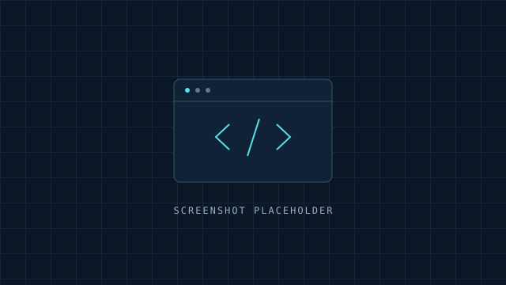

CLOUD · DEVOPS · AUTOMATION
Gerard Dexter
Verzon.
AWS Certified Cloud Practitioner | Aspiring Cloud & DevOps Engineer
Bringing an engineering mindset to the cloud. Building on seven years of professional experience to pursue reliable infrastructure and thoughtful automation.
Downloads a resume template. Full resume to be added.
THE NEXT CHAPTER 01 / CLOUD
CLOUD ENGINEERING
</> Infrastructure
⑂ CI/CD pipelines
↯ Automation
FOUNDATIONS → POSSIBILITIES+ + +
01 / ABOUT
An engineering foundation.
A cloud-focused future.
I’m a BS Information Technology graduate with seven years of professional experience spanning telecommunications engineering and project management.
Now, I’m transitioning into cloud technology, with a focus on Cloud Engineering, DevOps, and Workflow Automation. My AWS certification and AWS re/Start training are part of that next chapter.
7 yearsProfessional experience
BS Information TechnologyAcademic foundation
02 / TOOLKIT
Tools for the next chapter.
Technical focus areas across cloud, delivery, and automation.
Development & delivery
Code & automation
03 / CREDENTIALS
Learning with direction.
A foundation for the work ahead.
04 / PROJECTS
A space for hands-on work.
These entries are placeholders. Completed work will be added with documentation and source code.

01PROJECT PLACEHOLDER
Cloud infrastructure project
Add the project goal, architecture, services used, and lessons learned after completing the work.
02
PROJECT PLACEHOLDER
DevOps pipeline project
Add the delivery workflow, pipeline stages, validation steps, and a screenshot of the completed implementation.
03
PROJECT PLACEHOLDER
Workflow automation project
Add the process being automated, the approach taken, and verified outcomes once the project is complete.
05 / EXPERIENCE
Experience that
informs the next step.
Seven years across telecommunications engineering and project management.
Role summaries are editable placeholders. Employers, dates, and achievements have not been supplied.
TELECOMMUNICATIONS
Wireline Engineer
Summary placeholder: describe your wireline engineering responsibilities, technical scope, and verified contributions.
ENGINEERING
Commissioning Engineer
Summary placeholder: add the systems commissioned, testing responsibilities, and collaboration involved in this role.
PROJECT MANAGEMENT
PMO Analyst
Summary placeholder: describe your project coordination, reporting, and governance responsibilities using accurate examples.
06 / WHAT'S NEXT
Let’s build a connection.
For conversations about Cloud Engineering, DevOps, and Workflow Automation.
Contact links will be available once profile details are added.
Profile, project, and verification links are placeholders awaiting real destinations.